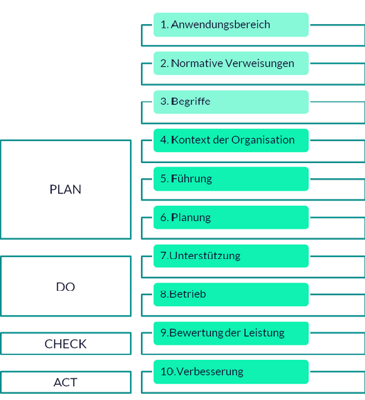

01
Wesentliche Neuerungen in der DIN EN ISO 14001:2015
Die wesentlichen Neuerungen The essential innovations in der aktuellen Fassung der ISO 14001 sind:
- Einführung der einheitlichen Grundstruktur Introduction of the uniform basic structure für ISO-Managementsystemnormen, (sog. „High-Level-Structure") .
- Stärkung der Leitungsverantwortung Strengthening of management responsibility für das Umweltmanagement und Integration in die Geschäftsprozesse Business processes der Organisation.
- stärkere Betonung der Umweltleistungsverbesserung Greater emphasis on environmental performance improvement und deren Messung durch entsprechende Kennzahlen Appropriate key figures .
- Durchführen Carry out einer Kontextanalyse, in der übergreifende Themen Cross-cutting issues und Entwicklungen bestimmt Determined werden, die für die Organisation und ihr Umweltmanagementsystem relevant sind; in diesem Zusammenhang ist nun auch zu bestimmen, inwiefern To what extent die Umwelt Auswirkungen Impacts auf die Organisation haben kann (z.B. durch Folgen des Klimawandels oder der Übernutzung natürlicher Ressourcen).
- Analyse von Anspruchsgruppen Stakeholder groups zur Bestimmung Determination und Berücksichtigung Consideration ihrer Erwartungen und Anforderungen Requirements .
- Bestimmung und Berücksichtigung Determination and consideration der Risiken und Chancen, die mit bedeutenden Umweltaspekten, bindenden Verpflichtungen Binding obligations und anderen Themen und Anforderungen einhergehen Go along with können.
- verstärkte Berücksichtigung des Lebensweges, d.h. der vor- und nachgelagerten Umweltauswirkungen The upstream and downstream environmental impacts , wobei die Erstellung Creation umfassender Ökobilanzen Comprehensive life cycle assessments keine Anforderung ist.
Die novellierte Norm Revised standard gilt seit ihrer Veröffentlichung am 15.09.2015. Zertifizierten Unternehmen und sonstigen Organisationen wurde ein Übergangszeitraum Transition period von drei Jahren eingeräumt Granted , um auf die neue Norm umzustellen To switch over
02
Erkläre die verschiedenen Arten von Risiken, denen Unternehmen im Zusammenhang mit dem Klimawandel ausgesetzt sind und wie sie definiert werden.
In den politischen Prozessen und den Veröffentlichungen In political processes and publications concerning companies’ zum Management von Klimarisiken in Unternehmen (Europäische Kommission, 2019a; TCFD, 2017) wird zwischen folgenden Risiken unterschieden “to distinguish” or “to differentiate :
- Physische Risiken des Klimawandels, also Risiken, die aus den Folgen des Klimawandels, wie etwa Extremwetterereignissen, Dürren oder dem des Meeresspiegels extreme weather events, droughts or rising sea levels resultieren.
- Transitorische Risiken, also Risiken für Unternehmen, die sich aufgrund der Veränderungen hin zu einer langfristig dekarbonisierten Wirtschaftsweise ergeben “resulting from the changes towards a long-term decarbonized economy” . Im Mittelpunkt stehen hier Risiken durch die Klimaschutzpolitik climate mitigation policies aber auch mögliche Effekte potential effect von verändertem Verhalten der Verbraucher und Investoren.
Zusammenfassend
summarised werden physische und
transitorische Risiken als klimabezogene Risiken bezeichnet.
In ISO-Normen wird Risiko als eine „Auswirkung von Ungewissheit“
(ISO 14001:2015) oder als Auswirkungen von Unsicherheit
in Bezug auf die Erreichung von Zielen („Effects of Uncertainty
on Objectives“, ISO 31000:2018) verstanden, sodass darunter
sowohl mögliche negative als auch mögliche positive Auswirkungen gemeint sind.
03
die Anforderungen der ISO 14001-Norm und den Struktur der Norm
Die ISO 14001 besteht aus zehn Kapiteln und ist genau wie andere revidierte Normen (z.B. ISO 9001, ISO 45001, ISO 50001 und ISO 27001) nach der High-Level-Structure (HLS) gegliedert. Während die ersten drei Kapitel einleitende Informationen beinhalten, umfassen die Abschnitte vier bis zehn die Anforderungen an ein Umweltmanagementsystem (UMS).
Die Norm ISO 14001 fordert einen kontinuierlichen Verbesserungsprozess, dessen Umsetzung nach dem PDCA-Zyklus (Plan-Do-Check-Act, auf Deutsch Planen-Umsetzen-Prüfen-Handeln) geschieht. Dies wird in der High-Level-Structure berücksichtigt.
Planen
- Kapitel 4: Kontext der Organisation
- Kapitel 5: Führung
- Kapitel 6: Planung
Umsetzen
- Kapitel 7: Unterstützung
- Kapitel 8: Betrieb
Prüfen
- Kapitel 9: Bewertung der Leistung
Handeln
- Kapitel 10: Verbesserung
08
Kap. 4: Kontext der Organisation
4.1 Verstehen der Organisation und ihres Kontextes:
Die Organisation muss externe und interne Themen bestimmen, die für ihren
Zweck relevant sind und sich auf ihre Fähigkeit auswirken, die beabsichtigten
Ergebnisse ihres UMS zu erreichen. Diese Themen umfassen Umweltzustände,
die auf eine Organisation einwirken oder durch die Organisation beeinflusst
werden.
4.1 Verstehen der Organisation und ihres Kontextes:
Beispiele:Umweltzustände mit Bezug auf Klima, Luqualität, Wasserqualität, Bodennutzung,
bestehende Kontamination, Verfügbarkeit natürlicher Ressourcen und Biodiversität, die entweder
den Zweck der Organisation beeinflussen können oder durch ihre Umweltaspekte beieinflusst
werden.
externe kulturelle, soziale, politische, gesetzliche, behördliche, finanzielle, technologische,
wirtschaftliche, natürliche und wettbewerbliche Umstände, ob international, national, regional
oder lokal
die internen Merkmale oder Bedingungen einer Organisation, wie z.B. Tätigkeiten, Produkte
und Dienstleistungen, strategische Ausrichtung, Kultur und Fähigkeiten ( d.h. Personen, Wissen,
Prozesse….)
4.2 Verstehen der Erfordernisse und Erwartungen interessierter Parteien
Understanding the requirements and expectations of interested parties.
Die Organisation muss :
- die interessierten Parteien, die für ihr UMS relevant sind bestimmen,
- die relevanten Erfordernisse und Erwartungen (d.h. Anforderungen) dieser interessierten Parteien bestimmen,
- bestimmen, welche von diesen Erfordernissen und Erwartungen zu bindenden Verpflichtungen werden.
Beispiele:
Interessierte Partei: Behörde
Erfordernisse/Erwartungen: Einhaltung der Genehmigungen, Gesetze
Bindende Verpflichtungen: Genehmigung, Gesetze
4.3 Festlegen des Anwendungsbereichs des UMS
Die Organisation muss die Grenzen und Anwendbarkeit bestimmen, um den
Anwendungsbereich des UMS festzulegen. Dabei muss berücksichtigt werden:
- die unter 4.1 genannten externen und internen Themen
- die unter 4.2 genannten bindenden Verpflichtungen
- ihre Organisationseinheit(en), Funktion(en) und physikalischen Grenzen
- ihre Tätigkeiten, Produkte und Dienstleistungen
- ihre Befugnis und Fähigkeit zur Ausübung von Steuerung und Einflussnahme
4.4 Umweltmanagementsystem (UMS)
Die Organisation muss entsprechend den Anforderungen dieser Internationalen Norm ein UMS aufbauen, verwirklichen, aufrechterhalten und fortlaufend verbessern, enschließlichder benötigten Prozesse und ihrer Wechselwirkungen, um ihre Umweltleistung zu verbessern. Die Organisation berücksichtigt das in 4.1 und 4.2 gewonnene Wissen.
08
Kap. 5: Führung
5.1 Führung und Verpflichtung
Die oberste Leitung muss in Bezug auf das UMS Führung und Verpflichtung zeigen, indem sie
- Rechenschaftspflicht für die Wirksamkeit des UMS ( Verantwortlichkeit übernimmt)
- Politik und Ziele für das UMS festlegt und mit dem Kontext und der strat. Ausrichtung abstimmt
- die Anforderungen des UMS in die Geschäftsprozesse der Organisation integriert werden
- sicherstellt, dass die für das UMS erforderlichen Ressourcen zur Verfügung stehen
- die Bedeutung eines wirksamen Umweltmanagements sowie die Wichtigkeit der Erfüllung der Anforderungen des UMS vermittelt
- sicherstellt, dass das UMS sein beabsichtigtes Ergebnis bzw. seine beabsichtigten Ergebnisseerzielt
- Personen anleitet und unterstützt, damit diese zur Wirksamkeit des UMS beitragen können -
- fortlaufende Verbesserung fördert
- andere relevante Führungskräfte unterstützt, um deren Führungsrolle in deren jeweiligen Verantwortungsbereich deutlich zu machen
5.2 Umweltpolitik
Die oberste Leitung muss innerhalb des festgelegten Anwendungsbereiches ihres UMS eine Umweltpolitik festlegen, verwirklichen und aufrechterhalten, die
- A. angemessen ist für
- den Zweck der Organisation,
- den Kontext der Organisation
- B. einen Rahmen zum Festlegen von Umweltzielen bietet
- C. eine Verpflichtungen zum Schutz der Umwelt, einschließlich dem Verhindern von Umweltbelastungen und sonstige besondere Verpflichtungen zum Kontext der Organisation enthält
- D. eine Verpflichtung zur Erfüllung ihrer bindenden Verpflichtungen enthält
- E. eine Verpflichtung zur fortlaufenden Verbesserung des UMS zur Verbesserung der Umweltleistung enthält
- Die Umweltpolitik muss
- als dokumentierte Information (=DI) aufrechterhalten werden
- innerhalb der Organisation bekanntgemacht werden, einschließlich den Personen, die im Auftrag der Organisation Tätigkeiten verrichten
- für die interessierten Parteien verfügbar sein
5.3 Rollen, Verantwortlichkeiten und Befugnisse in der Organisation:
Die oberste Leitung muss sicherstellen, dass die Verantwortlichkeiten und Befugnisse für relevante Rollen zugewiesen und innerhalb der Organisation bekannt gemacht werden, um ein wirkungsvolles UMS zu ermöglichen. Die oberste Leitung muss die Verantwortlichkeit und Befugnis zuweisen für
- a. das Sicherstellen, dass das UMS die Anforderungen der ISO 14001 erfüllt
- b. das Berichten an die oberste Leitung über die Leistung, einschließlich der Umweltleistung, des UMS
08
Kap. 6: Planung
6.1 Maßnahmen zum Umgang mit Risiko und Chancen
- 6.1.1 Allgemeines
- 6.1.2 Umweltaspekte
- 6.1.3 Bindende Verpflichtungen
- 6.1.4 Planung von Maßnahmen
6.1.1 Allgemeines
Die Organisation besitzt Prozesse (aufbauen, verwirklichen und aufrechterhalten), um die
Anforderungen 6.1.1 bis 6.1.4 zu erfüllen.
Bei Planungen
für das UMS nach 6.1 (d. h. 6.1.2 bis 6.1.4), muss die Organisation die
in 4.1 genannten Themen und die in 4.2 genannten Anforderungen berücksichtigen.
Das Unternehmen bestimmt die Risiken und Chancen in Verbindung mit ihren Umweltaspekten
(6.1.2), den bindenden Verpflichtungen (6.1.3) und anderen Anforderungen, die betrachtet
werden müssen, und bestimmt mögliche Notfallsituationen, einschl. deren Umweltauswirkung.
Die Organisation muss dokumentierte Informationen in erforderlichem Umfang pflegen, um
sicherzustellen, dass das Verfahren wie geplant vollzogen wurde.
6.1.2 Bedeutende Umweltaspekte
Die Organisation muss ihre bedeutenden Umweltaspekte innerhalb der verschiedenen Ebenen und Funktionen kommunizieren.
The organization must communicate its significant environmental aspects within the various levels and functions.Die Organisation muss dokumentierte Informationen über
- ihre Kriterien, die zur Bestimmung ihrer bedeutenden Umweltaspekte verwendet wurden
- ihre Umweltaspekte und damit verbundene Umweltauswirkungen
- ihre bedeutenden Umweltaspekte pflegen
ANMERKUNG: Bedeutende Umweltaspekte können zu Risiken führen, die entweder mit nachteiligen Umweltauswirkungen (Gefahren) oder mit vorteilhaften Umweltauswirkungen (Chancen) verbunden sind.
6.1.3 Bindende Verpflichtungen
Die Organisation muss
- a) bindende Verpflichtungen im Zusammenhang mit ihren Umweltaspekten identifizieren und Zugriff auf diese haben
- b) bestimmen, inwieweit diese bindenden Verpflichtungen auf die Organisation zutreffen.
- c) diese müssen beim Aufbau, Verwirklichung, Aufrechterhaltung und fortlaufender Verbesserung des UMS berücksichtigt werden.
Die Organisation muss dokumentierte Informationen ihrer bindenden Verpflichtungen pflegen.
ANMERKUNG: Bindende Verpflichtungen können potentiell zu Risiken führen, die entweder mit nachteiligen Auswirkungen (Gefahren) oder vorteilhaften Auswirkungen (Chancen) für die Organisation verbunden sind.
6.1.4 Planung von Maßnahmen
Die Organisation plant:
- a) Maßnahmen, bezüglich
- ‐ des Umgangs mit den Risiken und Chancen (siehe 6.1.1)
- ‐ bedeutenden Umweltaspekten (siehe 6.1.2) und
- ‐ bindenden Verpflichtungen (siehe 6.1.3).
- b) Wie
- -die Maßnahmen in die UMS‐Prozesse und andere Geschäftsprozesse integriert und dort umgesetzt werden
- -die Wirksamkeit der Maßnahmen bewertet wird.
Bei der Planung sind technologische Möglichkeiten und ihre finanziellen, betrieblichen und geschäftlichen Anforderungen berücksichtigt.
6.2 Umweltziele und Planung zu deren Erreichen
- 6.2.1 Umweltziele
- 6.2.2 Planung von Maßnahmen zum Erreichen der Umweltziele
6.2.1 Umweltziele
Die Organisation muss Umweltziele für relevante Funktionsbereiche und Ebenen festlegen. Dabei berücksichtigt sie:
- -die bedeutenden Umweltaspekte der Organisation und ihrer bindenden Verpflichtungen;
- -die Risiken und Chancen.
Wenn diese Ziele entwickelt werden, muss die Organisation ihre technischen Möglichkeiten sowie die finanziellen, betrieblichen und geschäftlichen Anforderungen berücksichtigen.
Die Umweltziele müssen
- a) im Einklang mit der Umweltpolitik stehen
- b) messbar sein (sofern machbar)
- c) überwacht werden
- d) vermittelt werden
- e) soweit erforderlich, aktualisiert werden.
Die Organisation muss dokumentierte Informationen zu den Umweltzielen aufbewahren.
6.2.2 Planung von Maßnahmen zum Erreichen der Umweltziele
Bei der Planung zum Erreichen der Umweltziele, muss die Organisation bestimmen
- was getan wird
- welche Ressourcen erforderlich sind
- wer verantwortlich ist
- wann es abgeschlossen wird
- wie die Ergebnisse bewertet werden, einschließlich Kennzahlen zur Überwachung der Fortschritte gegenüber dem Erreichen messbarer Umweltziele (siehe 9.1.1).
Die Organisation muss prüfen, wie die Maßnahmen zum Erreichen von Umweltzielen in ihre Geschäftsprozesse integriert werden können.
08
Kap. 7: Unterstützung
- 7.1 Ressourcen
- 7.2 Kompetenz
- 7.3 Bewusstsein
- 7.4 Kommunikation
- 7.4.1 Allgemeines
- 7.4.2 Interne Kommunikation
- 7.4.3 Externe Kommunikation
- 7.5 Dokumentierte Information (=DI)
- 7.5.1 Allgemeines
- 7.5.2 Erstellen und Aktualisieren
- 7.5.3 Lenkung DI
7.1 Ressourcen
Die Organisation muss die erforderlichen Ressourcen für den Aufbau, die Verwirklichung, die Aufrechterhaltung und die fortlaufende Verbesserung des UMS bestimmen und bereitstellen.
7.2 Kompetenz
Die Organisation muss
- -für Personen, die in ihrem Auftrag Tätigkeiten verrichten, welche die Umweltleistung der Organisation beeinflussen, die erforderliche Kompetenz bestimmen
- -sicherstellen, dass diese Personen auf Grundlage angemessener Ausbildung, Schulung oder Erfahrung kompetent sind
- -wenn erforderlich, Maßnahmen einleiten, um die benötigte Kompetenz zu erwerben, und die Wirksamkeit der getroffenen Maßnahmen zu bewerten.
ANMERKUNG Geeignete Maßnahmen können zum Beispiel sein: Schulung, Mentoring oder
Versetzung von gegenwärtig angestellten Personen; oder Anstellung oder Beauftragung
kompetenter Personen.
Die Organisation muss angemessene DI als Nachweis der Kompetenz aufbewahren.
7.3 Bewusstsein
Personen, die im Auftrag der Organisation Tätigkeiten verrichten, müssen sich
- -der Umweltpolitik
- -den bedeutenden Umweltaspekten und damit verbundenen tatsächlichen oder potentiellen Auswirkungen im Zusammenhang mit ihrer Arbeit
- -ihres Beitrags zur Wirksamkeit des UMS, incl. der Vorteile der verbesserten Umweltleistung,
- -der Folgen einer Nichterfüllung der Anforderungen des UMS, incl. bindender Verpflichtungen
bewusst sein.
7.4 Kommunikation
7.4.1 Allgemeines
Die Organisation muss den Prozess für die interne und externe Kommunikation in Bezug auf das UMS planen und verwirklichen, einschließlich worüber / wann / mit wem / wie kommuniziert wird.
Wenn die Organisation ihren Kommunikationsprozess plant, muss sie
- ihre bindenden Verpflichtungen berücksichtigen
- sicherstellen, dass die kommunizierte umweltbezogene Information glaubwürdig ist.
Die Organisation muss auf relevante Äußerungen bezogen auf ihr UMS reagieren. Die Organisation muss, soweit angemessen, DI als Nachweis für ihre Kommunikation aufbewahren.
7.4.2 Interne Kommunikation
In Bezug auf ihr UMS, muss die Organisation
- a) zwischen den verschiedenen Ebenen und Funktionsbereichen der Organisation kommunizieren, einschließlich Änderungen des UMS, sofern angemessen
- b) sicherstellen, dass ihr Kommunikationsprozess allen Personen, die im Auftrag der Organisation Tätigkeiten verrichten, ermöglicht, zur fortlaufenden Verbesserung beizutragen.
7.4.3 Externe Kommunikation
Die Organisation muss für das UMS relevante Informationen, die durch ihren Kommunikationsprozess bestimmt und durch ihre bindenden Verpflichtungen erforderlich sind, extern kommunizieren.
7.5 Dokumentierte Information (Abgekürzt DI)
7.5.1 Allgemeines
Das UMS der Organisation muss beinhalten:
- a) die von dieser Internationalen Norm geforderte DI;
- b) DI, welche die Organisation als notwendig für die Wirksamkeit des UMS bestimmt hat. ANMERKUNG
Der Umfang DI für ein UMS kann sich von Organisation zu Organisation unterscheiden, und zwar aufgrund
- der Größe der Organisation und der Art ihrer Tätigkeiten, Prozesse, Produkte und
- Dienstleistungen sowie der Gesetze
- der Komplexität ihrer Prozesse und deren Wechselwirkungen
- der Kompetenz der Personen
7.5.2 Erstellen und Aktualisieren
Beim Erstellen und Aktualisieren DI muss die Organisation
- angemessene Kennzeichnung und Beschreibung (z. B. Titel, Datum, Autor oder Referenznummer)
- angemessenes Format (z. B. Sprache, Softwareversion, Grafiken) und Medium (z. B. Papier, elektronisch)
- angemessene Überprüfung und Genehmigung im Hinblick auf Eignung und Angemessenheit sicherstellen
7.5.3 Lenkung DI
Die für das UMS erforderliche und von der ISO 14001 geforderte DI muss gelenkt werden, um sicherzustellen, dass sie
a) verfügbar und für die Verwendung geeignet ist, wo und wann sie benötigt wird
b) angemessen geschützt wird (z. B. vor Verlust der Vertraulichkeit, unsachgemäßem Gebrauch oder Verlust der Integrität)
Zur Lenkung DI muss die Organisation, falls zutreffend, folgende Tätigkeiten berücksichtigen:
- Verteilung, Zugriff, Auffindung und Verwendung
- Ablage/Speicherung und Erhaltung, einschließlich Erhaltung der Lesbarkeit
- Überwachung von Änderungen (z. B. Versionskontrolle)
- Aufbewahrung und Verfügung über den weiteren Verbleib
DI externer Herkunft, die von der Organisation als notwendig für Planung und Betrieb des UMS bestimmt wurde, muss angemessen gekennzeichnet und gelenkt werden.
08
Kap. 8: Betrieb
8.1 Betriebliche Planung und Steuerung (1)
Die Organisation muss die Prozesse zur Erfüllung der Anforderungen an das UMS und zur Durchführung der unter 6.1 und 6.2 bestimmten Maßnahmen planen, verwirklichen und steuern, indem sie
- Kriterien für die Prozesse festlegt,
- die Überwachung der Prozesse in Übereinstimmung mit den Kriterien durchführt, und um Abweichungen von der Umweltpolitik, Umweltzielen und bindende Verpflichtungen zu verhindern.
ANMERKUNG Überwachung kann technische Einrichtungen, dokumentierte und nichtdokumentierte Verfahren usw. einschließen. Sie können einer Hierarchie folgend (z. B. Beseitigung, Ersatz, organisatorische Maßnahmen) verwirklicht werden und einzeln oder in Kombination genutzt werden.
- Die Organisation muss geplante Änderungen überwachen sowie
- die Folgen unbeabsichtigter Änderungen beurteilen und, falls notwendig, Maßnahmen ergreifen, um jegliche negativen Auswirkungen zu vermindern.
8.1 Betriebliche Planung und Steuerung (2)
Die Organisation muss sicherstellen, dass ausgelagerte Prozesse gesteuert oder beeinflusst werden. Art und Ausmaß der Steuerung oder des Einflusses auf diese Prozesse, müssen innerhalb des UMS festgelegt sein.
Übereinstimmend mit der Lebenswegbetrachtung muss die Organisation
- a) angemessene Steuerungsmaßnahmen aufbauen, um sicherzustellen, dass Umweltanforderungen beim der Entwicklung, Lieferung, Verwendung und Behandlung am Ende der Lebensdauer ihrer Produkte und Dienstleistungen berücksichtigt werden, soweit angemessen,
- b) Umweltanforderungen für die Beschaffung von Produkten und Dienstleistungen bestimmen, soweit angemessen,
- c) ihre wesentlichen Umweltanforderungen an externe Anbieter, einschließlich Vertragspartner kommunizieren.
- d) die Notwendigkeit betrachten, dass Informationen über mögliche bedeutende Umweltauswirkungen während der Lieferung von Produkten und Dienstleistungen, während der Nutzung sowie der Behandlung am Ende der Lebensdauer und endgültige Beseitigung des Produktes bereitgestellt werden.
Die Organisation muss dokumentierte Information im notwendigen Umfang pflegen, so dass man darauf vertrauen kann, dass die Prozesse wie geplant durchgeführt wurden.
8.2 Notfallvorsorge und Gefahrenabwehr
Die Organisation muss die Prozesse einführen und verwirklichen, die sie für die Vorbereitung und Reaktion auf mögliche, in 6.1.1 ermittelte, Notfallsituationen benötigt.
Die Organisation
- a) bereitet sich auf die Gefahrenabwehr durch die Planung von Maßnahmen zur Verhinderung oder Minderung nachteiliger Umweltauswirkungen aufgrund von Notfallsituationen vor;
- b) Reagiert auf eintretende Notfallsituationen
- c) ergreift angemessene Maßnahmen, um die Folgen von Notfallsituationen zu verhindern oder zu mindern,
- d) testet regelmäßig die geplanten Gefahrenabwehrmaßnahmen, soweit praktikabel,
- e) Überprüft und überarbeitet regelmäßig die Prozesse und geplanten Gefahrenabwehrmaßnahmen, insbesondere nach dem Auftreten von Notfallsituationen oder Übungen.
- f) stellt relevante Informationen und Schulung über die Notfallvorsorge und Gefahrenabwehr in angemessener Form den relevanten interessierten Parteien, einschließlich Personen, die unter ihrer Aufsicht Tätigkeiten verrichten, zur Verfügung.
Die Organisation hält DI im notwendigen Umfang aufrecht, um darauf vertrauen zu können, dass die Prozesse wie geplant durchgeführt wurden.
08
Kap. 9: Bewertung der Leistung
9.1 Überwachung, Messung, Analyse und Bewertung
- 9.1.1 Allgemeines
- 9.1.2 Bewertung der Einhaltung von Vorschriften
9.2 Internes Audit
- 9.2.1 Allgemeines
- 9.2.2 Internes Auditprogramm
9.3 Managementbewertung
9.1 Überwachung, Messung, Analyse und Bewertung
9.1.1 Allgemeines
Die Organisation überwacht, misst, analysiert und bewertet ihre Umweltleistung.
Die Organisation bestimmt
- a) was überwacht und gemessen werden muss (unter Berücksichtigung der Tätigkeiten, bindenden Verpflichtungen, Ablauflenkung, Umsetzung der Umweltziele);
- b) die Methoden zur Überwachung, Messung, Analyse und Bewertung, sofern zutreffend, um gültige Ergebnisse sicherzustellen
- c) die Kriterien, anhand derer die Organisation ihre Umweltleistung bewerten wird, mittels geeigneter Kennzahlen
- d) wann die Überwachung und Messung durchzuführen ist
- e) wann die Ergebnisse der Überwachung und Messung zu analysieren und zu bewerten sind
Die Organisation muss sicherstellen, dass kalibrierte oder geprüfte Überwachungs‐ und Messgeräte zur Anwendung kommen und diese in angemessener Weise gewartet werden.
Die Organisation muss ihre Umweltleistung bewerten und einen Beitrag für die Managementbewertung (siehe 9.3) bereitstellen.
Die Organisation muss geeignete DI als Nachweis der Ergebnisse der Überwachung, Messung, Analyse und Bewertung aufbewahren.
Die Organisation muss die für ihre Umweltleistung relevanten Informationen, die durch ihren Kommunikationsprozess bestimmt und durch ihre bindenden Verpflichtungen erforderlich sind, intern und extern kommunizieren.
9.1.2 Bewertung der Einhaltung von Vorschriften
Die Organisation muss Prozesse zur Bewertung der Konformität mit ihren bindenden Verpflichtungen planen und verwirklichen.
Die Organisation muss
- bestimmen, wie häufig die Einhaltung ihrer Vorschriften bewertet wird
- die Einhaltung ihrer Vorschriften bewerten und erforderlichenfalls Maßnahmen ergreifen
- Kenntnisse und Verständnis ihres Status hinsichtlich der Erfüllung der bindenden Verpflichtungen aufrechterhalten.
Die Organisation muss DI aufbewahren.
9.2 Internes Audit
9.2.1 Allgemeines
Die Organisation muss in geplanten Abständen interne Audits durchführen, um Informationen darüber zu erhalten, ob das UMS
- a) die Anforderungen der Organisation an ihr UMS sowie der ISO 14001 erfüllt
- b) wirksam verwirklicht und aufrechterhalten wird.
9.2.2 Internes Auditprogramm
Die Organisation muss
- a) ein oder mehrere Auditprogramme planen, aufbauen, verwirklichen und aufrechterhalten, einschließlich der Häufigkeit von Audits, welche
- ‐ die umweltbezogene Bedeutung der betroffenen Prozesse,
- ‐ das Risiko in Verbindung mit Gefahren und Chancen und
- ‐ die Ergebnisse vorheriger Audits berücksichtigten
- b) für jedes Audit die Verantwortlichkeiten, Auditkriterien, Umfang, Häufigkeit und Methoden festlegen
- c) Auditoren so auswählen und Audits so durchführen, dass die Objektivität und Unparteilichkeit des Auditprozesses sichergestellt ist
- d) sicherstellen, dass die Ergebnisse des Audits gegenüber der zuständigen Leitung berichtet werden.
Die Organisation muss DI als Nachweis der Verwirklichung des Auditprogramms und der Ergebnisse des Audits aufbewahren.
9.3 Managementbewertung (1)
Die oberste Leitung muss das UMS der Organisation in geplanten Abständen bewerten, um dessen fortdauernde Eignung, Angemessenheit und Wirksamkeit sicherzustellen.
Die Managementbewertung muss folgende Aspekte behandeln:
- a) den Status von Maßnahmen vorheriger Managementbewertungen
- b) Veränderungen bei
- externen und internen Themen, die das UMS betreffen
- Den Erfordernissen und Erwartungen interessierter Parteien
- bindenden Verpflichtungen
- ihren bedeutenden Umweltaspekten und Risiko in Verbindung mit Gefahren und Chancen
- c) den erreichten Erfüllungsgrad der Ziele
- d) Informationen über die Umweltleistung der Organisation, einschließlich Entwicklungen bei
- Nichtkonformitäten und Korrekturmaßnahmen
- Ergebnissen von Überwachungen und Messungen
- Erfüllung bindender Verpflichtungen
- Auditergebnissen
- e) Äußerung(en) externer interessierter Parteien
- f) Möglichkeiten zur fortlaufenden Verbesserung
- g) Angemessenheit von Ressourcen, die für die Aufrechterhaltung eines wirksamen Umweltmanagementsystems erforderlich sind.
9.3 Managementbewertung (2)
Die Ergebnisse der Managementbewertung müssen enthalten:
- Schlussfolgerungen zur fortdauernden Eignung, Angemessenheit und Wirksamkeit des UMS
- Entscheidungen zu Möglichkeiten der fortlaufenden Verbesserung
- jeglichen Änderungsbedarf am UMS, einschließlich Ressourcenbedarf
- Maßnahmen, sofern erforderlich, wenn Ziele nicht erreicht wurden
- jegliche Auswirkungen auf die strategische Ausrichtung der Organisation.
Die Organisation muss DI Information als Nachweis der Ergebnisse der Überprüfung durch das Management aufbewahren.
08
Kap. 10: Verbesserung
10.1 Allgemeines
Die Organisation bestimmt Möglichkeiten zur Verbesserung, wählt diese aus und leitet jegliche notwendigen Maßnahmen ein, um die beabsichtigten Ergebnisse ihres UMS zu erreichen.
10.2 Nichtkonformität und Korrekturmaßnahmen
Wenn eine Nichtkonformität auftritt, muss die Organisation:
- a) darauf reagieren und falls zutreffend
- sofortigeMaßnahmen zur Überwachung und zur Korrektur ergreifen
- nachteilige Umweltauswirkungen vermindern
- mit den Folgen umgehen
- b) die Notwendigkeit von Maßnahmen zur Beseitigung der Ursache von Nichtkonformitäten bewerten, damit diese nicht erneut oder an anderer Stelle auftreten, und zwar durch
- Überprüfen der Nichtkonformität
- Bestimmen der Ursachen der Nichtkonformität
- Bestimmen, ob vergleichbare Nichtkonformitäten bestehen, oder möglicherweise auftreten könnten
- c) Bestimmung und Verwirklichung jeder erforderlichen Korrekturmaßnahme
- d) die Wirksamkeit jeglicher ergriffener Korrekturmaßnahme überprüfen
- e) sofern erforderlich, das UMS ändern
Korrekturmaßnahmen müssen der Bedeutung der Auswirkungen der aufgetretenen Nichtkonformitäten angemessen sein, einschließlich der Umweltauswirkung(en).
Die Organisation muss DI aufbewahren, als Nachweis der Art der Nichtkonformität sowie jeder daraufhin getroffenen Maßnahme, der Ergebnisse jeder Korrekturmaßnahme.
10.3 Fortlaufende Verbesserung
Die Organisation muss die
- Eignung,
- Angemessenheit und
- Wirksamkeit
ihres UMS fortlaufend verbessern, um ihre Umweltleistung zu erhöhen.
04
Abschnitt 4 bis 10
Abschnitt 4: Kontext der Organisation
Eine Organisation sollte sich dem Umfeld bewusst seinbe aware of the environment ,
in dem es agiert in which it operates .
Gesetzliche legal
wirtschaftliche und kulturelle economic and cultural
Einflussgrößenfactors
gilt es zu identifizierenmust be identified ,
zu bewerten be evaluated und
zu überwachenmonitored .
Dazu gehört ebenfalls This also includes , die interessierten Parteien und
deren Anforderungen their requirements
und Erwartungen an die Organisation zu kennen. Diese können sowohl interner (z.B. Mitarbeiter,
Eigentümer Owner etc.) als auch externer Natur (z.B.
Behörden Authority , Lieferanten, Kunden) sein.
Auf diesen Überlegung basierendBased on these considerations muss
der Anwendungsbereich tha scope des Umweltmanagementsystems festgelegt und
entsprechende Verfahren corresponding procedures und Prozesse bestimmt werden.
Abschnitt 5: Führung
Die oberste Führungsebene Top management ist für die Festlegung der Umweltpolitik Determination of the environmental policy und die Schaffung der erforderlichen Organisationsstruktur the creation of the necessary organisational structure verantwortlich. Ebenfalls muss Sie Engagement und Einsatz zeigen It must also show commitment and dedication , indem sie weitere Aufgaben übernimmt take-over . Zu nennen sind hier vor allem die Unterstützung und Förderung der Mitarbeiter im Sinne des Umweltmanagementsystems sowie die Einführung konkreter Maßnahmen in terms of the environmental management system as well as the introduction of concrete measures zur Umsetzung und Aufrechterhaltung des kontinuierlichen Verbesserungsprozesses implementation and maintenance of the continuous improvement process .
Abschnitt 6: Planung
In diesem Abschnitt der ISO 14001 geht es vor allem um den
Umgang dealing with mit umweltrelevanten Chancen und Risiken.
Die Form fordert risikobasiertes DenkenThe form requires risk-based thinking und
die Ableitung entsprechender Maßnahmen the derivation of
appropriate measures .
Eine Organisation muss sich ihrer
Wechselwirkungennteractions mit der Umwelt bewusst sein,
deren Auswirkungen bewerten assess their impact und
entsprechende Umweltziele ableiten.derive corresponding environmental goals.
Ebenfallsalso, likewise müssen
Verpflichtungen Commitments aus der
UmweltgesetzgebungEnvironmental legislation und
anderen Verordnungen other ordinances und
Richtlinien analysiert und deren
Richtlinien Guidelines, policy analysiert und deren
Erfüllung sichergestellt werdenFulfilment to be ensured .
Abschnitt 7: Unterstützung
Für die erfolgreiche Anwendung eines Umweltmanagementsystems sind viele verschiedene Faktoren notwendig.
Dazu gehören zum Beispiel Ressourcen, Personen, Kompetenzen, Wissen, Infrastruktur, interne und externe Kommunikation.
Hervorzuheben ist an dieser Stelle, dass sämtliche Mitarbeiter über das UMS und dessen Ziele informiert sein müssen.
Ein Bewusstsein für mögliche Folgen aufgrund einer Nichterfüllung ist notwendig. Die für die Wirksamkeit
des Umweltmanagementsystems notwendigen Informationen müssen dokumentiert und verfügbar sein.
Abschnitt 8: Betrieb
Umweltbezogene Prozesse müssen stets auf das Ziel ausgerichtet sein, ihre Auswirkungen auf die Umwelt zu minimieren. Diese Anforderung der Norm betrifft nicht nur interne Prozesse, sondern erstreckt sich über die gesamte Wertschöpfungskette. Damit schließt sie vorgelagerte bzw. nachfolgende externe Prozesse, zum Beispiel auf Seiten von Lieferanten oder anderen Vertragspartnern, mit ein. Nicht weniger wichtig ist der Umgang mit potenziellen Notfallsituationen. Die Norm ISO 14001 fordert die Planung, Umsetzung und Aufrechterhaltung geeigneter Maßnahmen.
Abschnitt 9: Bewertung der Leistung
Abschnitt 9 der ISO 14001 fordert die systematische und regelmäßige Überwachung, Messung, Analyse und Bewertung der Umweltleistung. Ein hilfreiches Werkzeug hierfür sind beispielsweise interne Audits. Zur Sicherstellung einer effektiven Umsetzung muss die Organisation Kriterien, Umfang und Programm für jedes einzelne Audit festlegen. Zur Aufrechterhaltung der Wirksamkeit des Umweltmanagementsystems müssen ebenfalls regelmäßig Managementbewertungen durchgeführt werden. Diese liegen in der Verantwortung der obersten Leitung der Organisation. Mögliche Inhalte einer Managementbewertung können sein:
- Erreichungsgrad der Umweltziele
- Rückmeldungen von interessierten Parteien
- Anpassung an sich verändernde gesetzliche Vorgaben
- Degree of achievement of environmental goals
- Feedback from interested parties
- Adaptation to changing legal requirements
Abschnitt 10:Verbesserung
Der letzte Abschnitt der ISO 14001 befasst sich mit dem so wichtigen Aspekt der Verbesserung. Unternehmen müssen gemäß der Norm Chancen
zur Weiterentwicklung erkennen und wahrnehmen.
Durch das Aufzeigen von Nichtkonformitäten und die Umsetzung notwendiger Korrekturmaßnahmen wird in dieser
Phase eine kontinuierliche Verbesserung sowohl des Umweltmanagementsystems als auch der Umweltleistung angestrebt.
05
Was ist ein Umweltaspekt nach ISO 14001?
In der Sprache von ISO 14001 klingt das so: „ein Umweltaspekt ist ein Element der Aktivitäten, Produkte oder Services der Organisation, das Auswirkung auf die Umwelt hat oder haben kann.“ Ein Umweltaspekt ist die Art, auf die Ihre Aktivität, Ihr Service oder Ihr Produkt die Umwelt beeinflusst. Ein Beispiel für einen Umweltaspekt könnte der Einsatz von Reinigungsmitteln mit dem Potenzial zur Wasserverschmutzung sein (diese Verschmutzung ist der Umweltaspekt). Es gibt eine grundsätzliche, systematische Herangehensweise zur Identifizierung, Evaluierung und zum Management von Umweltaspekten. Diese beinhaltet die Definition des Anwendungsbereichs des UMS (Umweltmanagementsystems), die Identifizierung von Umweltaspekten, die Bewertung von Umweltaspekten und die Überwachung und Überprüfung von Umweltaspekten.
- list
06
Die Bewertung von Umweltaspekten
Es gibt eine grundsätzliche, systematische Herangehensweise zur Identifizierung, Evaluierung und zum Management von Umweltaspekten.
Diese beinhaltet die Definition des Anwendungsbereichs des UMS (Umweltmanagementsystems), die Identifizierung von Umweltaspekten,
die Bewertung von Umweltaspekten und die Überwachung und Überprüfung von Umweltaspekten.
Bei der Bewertung von Umweltaspekten nach ISO 14001 gibt es nicht das „richtige Verfahren“, sondern
eine Vielzahl von Möglichkeiten. Jedes Unternehmen muss die für sich sinnvolle und nutzbringende Möglichkeit
zur Aspektermittlung festlegen und dokumentieren, wie die bedeutenden Umweltauswirkungen identifiziert werden.
07
Die Überwachung und Überprüfung von Umweltaspekten
Gemäß der Vorgaben der ISO 14001 muss die Organisation ein Verfahren einführen, verwirklichen und aufrechterhalten, um jene Umweltaspekte ihrer Tätigkeiten, Produkte und Dienstleistungen innerhalb des festgelegten Anwendungsbereiches des Umweltmanagementsystem zu ermitteln, die bedeutende Auswirkungen auf die Umwelt haben oder haben können. Dabei müssen die Informationen dokumentiert und auf dem aktuellsten Stand gehalten werden sowie bei der Aufrechterhaltung des Umweltmanagementsystems beachtet werden.
08
Die Vorteile einer Zertifizierung
Eine Zertifizierung nach ISO 14001 bietet viele Vorteile für Unternehmen. Zu den größten Vorteilen zählen hauptsächlich kostensparende und imagebildende Punkte. Die größten Vorteile der ISO 14001 Zertifizierung für Ihr Unternehmen sind: Ressourcen- & Kostenersparnisse (steigende Energiepreise), Rechtssicherheit bei neuen Umwelt-Auflagen, positivere Außenwirkung zieht Neukundinnen an, Innovationsbereitschaft begeistert qualifizierte Mitarbeiterinnen an und ungenutzte Potenziale werden schneller erkannt.
Eine Zertifizierung nach ISO 14001 bietet viele Vorteile für Unternehmen. Zu den größten Vorteilen zählen hauptsächlich kostensparende und imagebildende Punkte. Die größten Vorteile der ISO 14001 Zertifizierung für Ihr Unternehmen sind: Ressourcen- & Kostenersparnisse (steigende Energiepreise), Rechtssicherheit bei neuen Umwelt-Auflagen, positivere Außenwirkung zieht Neukundinnen an, Innovationsbereitschaft begeistert qualifizierte Mitarbeiterinnen an und ungenutzte Potenziale werden schneller erkannt.
09
Wie kann ich meine Organisation auf Umweltaspekte prüfen?
Um Ihre Organisation auf Umweltaspekte zu prüfen, können Sie ein Verfahren zur Identifizierung der Umweltaspekte einrichten und jene Aspekte bestimmen, die eine signifikante Auswirkung auf die Umwelt haben oder haben können. Sie sollten auch ein Verzeichnis der Umweltaspekte führen, das immer auf dem letzten Stand gehalten wird und geplante neue oder modifizierte Aktivitäten, Produkte oder Services berücksichtigt.
10
was ist der Kontext einer Organisation?
Der Kontext einer Organisation bezieht sich auf das Verständnis der internen und externen Faktoren, die sich auf ihre Umweltleistung auswirken können. Der interne Kontext umfasst alle Maßnahmen, Produkte oder Dienstleistungen, die sich auf die Umweltleistung auswirken können. Der externe Kontext kann rechtliche, wirtschaftliche, soziale oder politische Fragen umfassen.
Was sind die interne und externe Factoren
Interne Faktoren sind solche, die innerhalb einer Organisation existieren und sich auf ihre Umweltleistung auswirken können. Dazu können die Maßnahmen, Produkte oder Dienstleistungen der Organisation gehören. Zum Beispiel können die von einem Unternehmen verwendeten Fertigungsprozesse Auswirkungen auf seine Umweltleistung haben.Externe Faktoren sind solche, die außerhalb einer Organisation existieren, aber dennoch ihre Umweltleistung beeinflussen können. Dazu können rechtliche, wirtschaftliche, soziale oder politische Fragen gehören. Zum Beispiel können Änderungen in Umweltvorschriften oder die öffentliche Meinung zu Umweltfragen die Umweltleistung einer Organisation beeinflussen.Sowohl interne als auch externe Faktoren sollten bei der Bestimmung des Kontexts einer Organisation gemäß ISO 14001 berücksichtigt werden.
PESTLE- und SWOT-Analysen
PESTLE und SWOT sind zwei häufig verwendete Analysewerkzeuge im Geschäfts- und Strategieplanung.PESTLE steht für Politisch, Wirtschaftlich, Sozial, Technologisch, Rechtlich und Umwelt. Es ist ein Werkzeug zur Analyse der externen makroökonomischen Faktoren, die sich auf eine Organisation auswirken können. Die Analyse hilft dabei, die Chancen und Bedrohungen zu identifizieren, die sich aus Veränderungen in diesen externen Faktoren ergeben können. SWOT steht für Stärken, Schwächen, Chancen und Bedrohungen. Es ist ein Werkzeug zur Analyse sowohl der internen als auch der externen Umgebung einer Organisation. Die Analyse hilft dabei, die Stärken und Schwächen der Organisation sowie die Chancen und Bedrohungen zu identifizieren, denen sie gegenüberstehen könnte. Sowohl PESTLE- als auch SWOT-Analysen können nützlich sein, um den Kontext einer Organisation zu verstehen und Strategien zur Verbesserung ihrer Leistung zu entwickeln.
11
Was ist eine interessierte Partei gemäß ISO 14001:2015 und welche Rolle spielt sie im Umweltmanagementsystem (EMS) einer Organisation?
Gemäß ISO 14001:2015 wird eine interessierte Partei als Person oder Organisation definiert, die eine Entscheidung
oder Aktivität eines Umweltmanagementsystems (EMS) einer Organisation beeinflussen, beeinträchtigt werden oder
sich selbst als beeinträchtigt empfinden kann³.
ISO 14001:2015 legt großen Wert auf interessierte Parteien eines EMS einer Organisation.
Die Norm verlangt von Organisationen, dass sie die Anforderungen interessierter Parteien
verstehen, den Geltungsbereich des EMS und die Umweltpolitik für sie verfügbar machen
und jegliche Kommunikation von externen interessierten Parteien überprüfen¹.
Interessierte Parteien können Mitarbeiter, Lieferanten, Kunden, Aktionäre,
lokale Gemeinschaften, Umweltgruppen und Regierungsbehörden umfassen.
Die Bedürfnisse und Erwartungen dieser Parteien sollten bei der
Entwicklung und Implementierung eines EMS identifiziert und berücksichtigt werden².
Die Anforderungen für die Identifizierung der interessierten Parteien
für ein EMS finden sich in Abschnitt 4.2 zum Verständnis der Bedürfnisse
und Erwartungen interessierter Parteien. In diesem Abschnitt wird erläutert,
dass der Grund für die Identifizierung der interessierten Parteien darin besteht,
die relevanten Bedürfnisse und Erwartungen dieser Parteien zu bestimmen, damit
Sie feststellen können, welche dieser Bedürfnisse und Erwartungen Compliance-Verpflichtungen sind¹.
Ein Teil des Besitzes eines EMS besteht darin, die Bedürfnisse Ihrer interessierten
Parteien zu erfüllen. Wenn Sie beispielsweise einen Kunden haben, der erwartet,
dass Ihre Verpackung wiederverwendbar ist und sie Ihnen für den nächsten Versand
zurücksenden möchte, wird er nicht zufrieden sein, wenn Sie ihm Ihr Produkt in
einem Einwegbehälter schicken. Dies wäre eine Erwartung einer interessierten Partei,
die Sie identifizieren und erfüllen müssen¹."
Was sind die Anforderungen interessierter Parteien gemäß ISO 14001:2015 und wie können sie von einer Organisation erfüllt werden?
Die Anforderungen interessierter Parteien gemäß ISO 14001:2015 können je nach spezifischer
Partei und ihrer Beziehung zur Organisation variieren. Einige häufige Anforderungen
interessierter Parteien können die Einhaltung von Umweltvorschriften, Transparenz
in der Umweltberichterstattung und das Engagement zur Reduzierung der Umweltauswirkungen der Organisation umfassen.
Beispielsweise können Regierungsbehörden von einer Organisation verlangen,
dass sie Umweltvorschriften einhält und über ihre Umweltleistung berichtet.
Kunden und Verbraucher können von einer Organisation verlangen, dass sie
umweltfreundliche Praktiken in ihren Betrieben anwendet und Informationen über
die Umweltauswirkungen ihrer Produkte oder Dienstleistungen bereitstellt.
Mitarbeiter können von einer Organisation verlangen, dass sie eine sichere und
gesunde Arbeitsumgebung bereitstellt und ihre Auswirkungen auf die lokale Gemeinschaft minimiert.
Es ist wichtig für eine Organisation, die Bedürfnisse und Erwartungen ihrer interessierten Parteien
zu identifizieren und sich bemühen, diese Anforderungen als Teil ihres Umweltmanagementsystems (EMS) zu erfüllen.
08
question
intro
- list
08
question
intro
- list